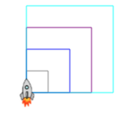

Given the array
const colors = [‘red’, ‘gray’, ‘blue’, ‘purple’, ‘cyan’];
Use JS Turtle, to draw the following shapes

let colorList = ['gray', 'blue', 'purple', 'cyan'];
clear();
for (let i = 0; i < colorList.length; i++) {
color(colorList[i]);
for (let n = 0; n < 4; n++) {
fd(25 * (i + 1));
rt(90);
}
};